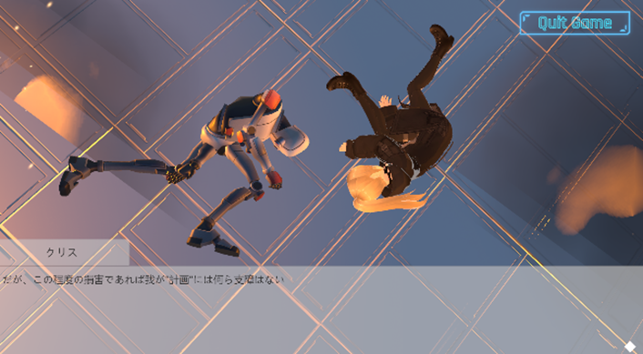
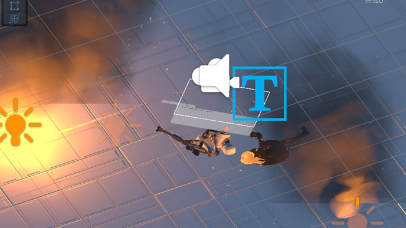
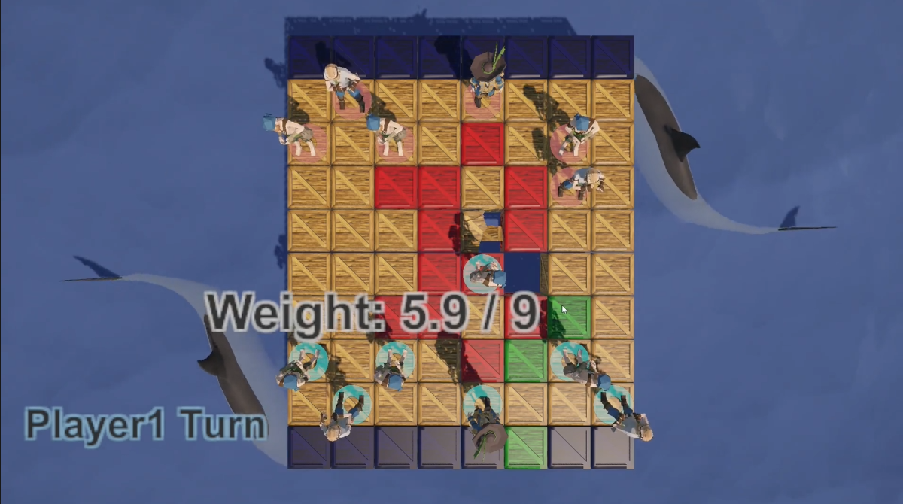
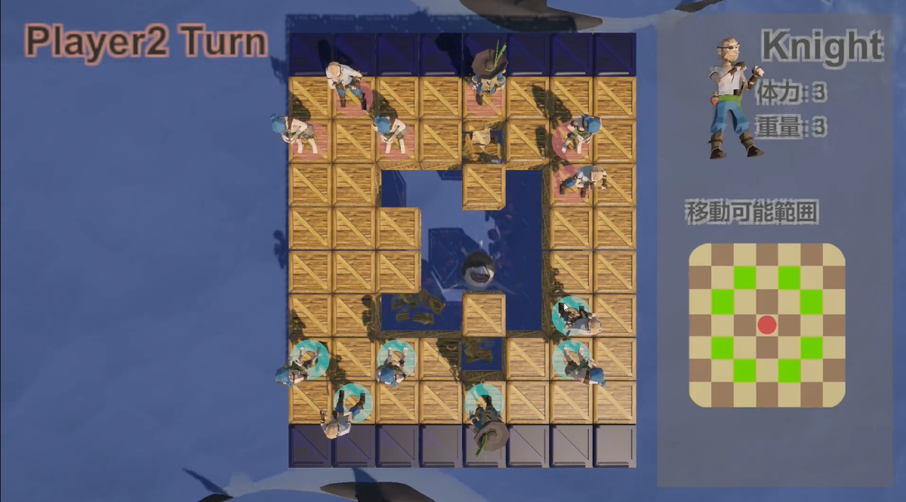

FUKUYAMA
Hayato
Welcome to my portfolio!
I create games, illustrations, and 3DCG.
Profile
🎓 Education
2019/4 Entered 青森県立八戸北高等学校
2022/3 Graduated 青森県立八戸北高等学校
2022/4 Entered 会津大学コンピュータ理工学部コンピュータ理工学科
📕 Languages (Years of experience)
C (3Y)
C# (3Y)
C++ (2Y6M)
JavaScript (1Y)
HLSL (1Y)
TypeScript (2M)
Python (2M)
🛠 Tools (Years of experience)
Unity (3Y11M)
Blender (2Y)
ibisPaint (6Y)
Projects
ぐるぐる！シュガー★ファクトリー
📅 Period: 2024/3 ~ 2024/4
🕹️ 3Dor2D: 2D
🧠 Language: C#(Unity)
🎨 Role: Programmer
👥 Members: 2
Time-Limited Candy Matching Puzzle Game
This is a puzzle game where players match and clear falling candies to earn points, aiming to achieve the best score within a time limit. Designed with simple rules, the game encourages repeated play through its satisfying core loop.
A standout feature is the adaptive difficulty system. As players clear more candies, the game adjusts: the required match count, candy falling speed, and the maximum candy size.
Early on, players can enjoy learning the game at a relaxed pace, but as they progress, the pace quickens and the challenge ramps up — creating a more engaging and rewarding experience.
Robot Enhance
📅 Period: 2024/1 ~ 2024/2
🕹️ 3Dor2D: 3D
🧠 Language: C#(Unity)
🎨 Role: Programmer, Designer
👥 Members: 1
3D Action & Visual Novel Hybrid Game
In this game, the player controls Sophia, the main protagonist, who works alongside a robot named Rosie. The goal is to collect Rosie’s missing parts through action-based gameplay.
The game is structured in two parts: a shooting/action phase where players collect parts, and a visual novel phase where the story unfolds. The number of parts collected in the action phase directly affects the game's ending, allowing for multiple narrative outcomes.
Feeling that a static 2D title screen might be underwhelming, I wanted to fully leverage Unity’s 3D capabilities. As a result, I designed both the title screen and novel interface backgrounds using animated 3D scenes to provide a stronger sense of immersion and atmosphere.
[player’s perspective]
[scene setup]
ぐるぐる！シュガー★ファクトリー
📅 Period: 2024/3 ~ 2024/4
🕹️ 3Dor2D: 2D
🧠 Language: C#(Unity)
🎨 Role: Programmer
👥 Members: 2
Time-Limited Candy Matching Puzzle Game
This is a puzzle game where players match and clear falling candies to earn points, aiming to achieve the best score within a time limit. Designed with simple rules, the game encourages repeated play through its satisfying core loop.
A standout feature is the adaptive difficulty system. As players clear more candies, the game adjusts: the required match count, candy falling speed, and the maximum candy size.
Early on, players can enjoy learning the game at a relaxed pace, but as they progress, the pace quickens and the challenge ramps up — creating a more engaging and rewarding experience.
Soul Light
📅 Period: 2024/8 ~ 2024/8
🕹️ 3Dor2D: HD-2D
🧠 Language: C#(Unity)
🎨 Role: Programmer, Designer
👥 Members: 1
Puzzle Action Adventure in a World of Darkness and Light
This is a puzzle action game set in a world consumed by darkness. Players control a young girl who holds the power to share light, embarking on a journey to restore it to the world.
The game emphasizes an immersive atmosphere and level design that ensures any player can complete it, making it accessible and engaging for a wide audience.
For the prologue, I created a text morphing animation using Blender’s Geometry Nodes. This allowed for precise control over shape transitions, resulting in a smooth and expressive animation that enhances the narrative experience.
Lost of Music
📅 Period: 2024/8 ~ 2024/12
🕹️ 3Dor2D: HD-2D
🧠 Language: C#(Unity)
🎨 Role: TeamLeader, Programmer
👥 Members: 7
Restoring the Sound of a Broken Music Box
This is an action-puzzle game where the player explores the inside of a broken music box that has lost its sound. As they progress, they acquire musical instruments (abilities), using them to unlock new paths and gradually restore the music box’s melody.
The game begins with silence or a somber melody to express the loneliness and quiet at the start of the story. As more instruments are collected, new musical layers are added to the BGM. By the end of the game, the music becomes rich and complete, delivering a strong sense of progression, emotional impact, and narrative climax.
Breaking Chess
📅 Period: 2024/12 ~ 2025/2
🕹️ 3Dor2D: 3D
🧠 Language: C#(Unity)
🎨 Role: Programmer
👥 Members: 1
Unconventional and interesting
This was a game developed for entry into BitSummit: The 13th Summer of Yokai. While it retained the strategic appeal of chess, it focused on breaking the familiar conventions of the game that players were used to — for example, having the chessboard collapse under the weight of the pieces.
The goal was to deliver a fresh and surprising experience by twisting the traditional rules of chess.
 OldMaid(BaBaNuki):Prototype
📅 Period: 2025/5 ~ 2025/5
🕹️ 3Dor2D: 3D
🧠 Language: C#(Unity)
🎨 Role: Programmer
👥 Members: 1
Facial Animation Practice with Apple ARKit & Animancer
This project was developed to put two Unity assets — Apple ARKit and Animancer — into practice. It focused on achieving realistic NPC facial expressions using Apple ARKit, along with smooth transitions between expressions through crossfading with Animancer.
Creating games that thrill not just players, but also developers.
Illustrations


3DCG works


Contact
Thanks for watching!